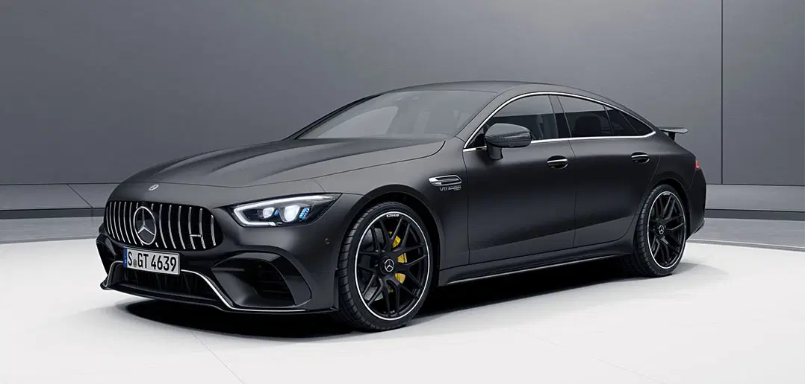

My Favorite Car
My Favorite Video
I am going to mention about myself. My name is Alper Buğra Açıcı. I am 22. In the future, I intend to have diverse, wonderful web design skills. I live in Bursa. I enjoy drawing, playing story-mode computer games, coding, improving myself, and producing new things. I have some aims in this life as I mentioned to you and one of the most attractive targets is having a Mercedes car, and above, I have brought some Mercedes cars as you can see enjoy it while looking at.